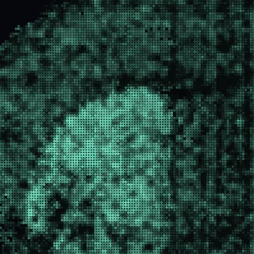
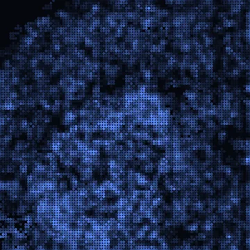
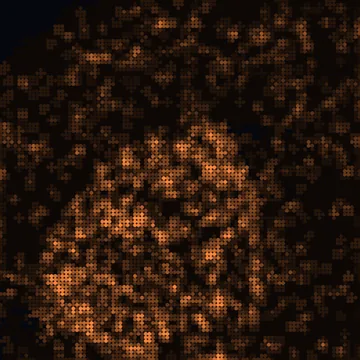
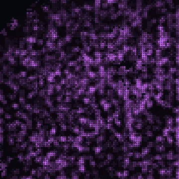

Multimodal
Compare RNA, chromatin accessibility, histone marks and protein measured on the same spots.
Tutorial in preparation
This tutorial is being written. The outline below shows what it will cover.

RNAexpression
ATACopen chromatin
H3K27acactive mark
H3K27me3repressive mark
On this page1
Some methods measure several kinds of molecules on the same spots: RNA, chromatin accessibility (ATAC), histone marks such as H3K27ac or H3K27me3, and protein. Each kind is a modality, a spots × features matrix over the same spots.
The Multi-omics tab shows one feature, such as the gene Pde10a, in every modality, and compares two modalities across the tissue. The pictures use Spatial-Mux-seq data of an adult mouse brain (GEO GSE263333): 9,686 spots with RNA, ATAC, H3K27ac, H3K27me3 and 121 antibodies.
Paints the mapAnalysis
Appears when two or more modalities were declared at import.

Open the tab
Click Multi-omics in the tab rail. The head counts the modalities and spots. View shows one feature across the modalities; Analysis compares two modalities.
Pick a part below to read about it.
Pick a feature
Type into Search features… and click a row. A feature is a gene, and the coloured dots after it show which modalities measure it. The list puts the features measured in the most modalities first; the tab opens on the top one.
The box above the search field names the feature and says in how many modalities it is measured, for example Measured in 4 of 5 modalities.

Smooth or not
Smooth is on by default. Each spot then shows the mean of itself and its 6 nearest neighbours, 7 spots in all. Chromatin at a single spot is too sparse to compare raw; the mean makes the maps comparable.
Untick Smooth to see the value of each spot alone. Coupling follows the same setting. With several sections, a spot’s neighbours come from its own section. A dataset without spatial coordinates is never smoothed, and the box is not shown.
What the numbers are
RNA and chromatin counts are shown as log1p(CP10K): each spot is scaled to 10,000 counts of that modality, then log-transformed. Protein counts are shown as CLR (see Protein). Values that are not counts are shown as they are. The colour bar under the view names the transform.
Hover a spot
The tooltip gives the feature’s value in every modality that measures it. The modality on the canvas is in bold.

View decides how the feature is put on the tissue. Every modality is scaled to its own p1–p99, the 1st to 99th percentile of its values: log1p(CP10K) and CLR values share no unit, so one common scale would make the weaker modality look empty. A feature found in fewer than about 1% of spots is scaled to the top of the spots that carry it.
Single
Pick a modality
Each chip is one modality, with its type under the name, such as open chromatin or repressive mark. Click a chip, or press the number on it (keys 1–9, on this tab and not while typing). A chip reading not measured is greyed out.
Pressing a chip or a number in Blend or Split returns to Single.

Read the colour bar
The bar names the transform, the share of spots with signal, and the range from p1 to p99. In a log1p map, a spot with 0 (no signal in the spot or its neighbours) stays dark grey. Colouring otherwise works as described in Colour by a continuous value.
Side by side
One small map per modality
A floating panel opens with one map per modality, drawn at the same layout and each on its own scale. The canvas keeps showing the modality picked with the chips.

Hover and click a map
Hover a map: a ring marks the same spot in every map, the line above the maps lists its values, and after a short rest the spot is spotlit on the main canvas. Hovering the main canvas rings the spot in the maps too.
Click a map to paint that modality on the canvas.
Correlation of the maps
Under the maps, a table compares every pair of modalities for this feature. Pearson r correlates the values shown across spots. Lee’s L measures whether two maps are high in the same neighbourhoods; its diagonal is each map’s own spatial smoothness. Orange cells rise together, blue cells move in opposite directions.

Move, dock or close
Drag the header to move the panel. ⇤ docks it into the View section, and × closes it and returns to Single. Panels behave as described in Float a panel.
Blend
Three modalities in one map
Pick a modality for R, G and B, or — to leave a channel empty. Each is scaled to its own p1–p99, and the channels add: where two are high the colours mix (R+G yellow, R+B magenta, G+B cyan, all three white). A modality that does not measure the feature leaves its channel empty.
It follows the same rule as Multi-RGB in the Genes tab.


Split
Two modalities, one divider
Left is drawn left of a vertical line, Right right of it, with the same colour map and each on its own scale. Drag Divider to move the line, from 0 to 100% of the tissue’s width on screen.
The line and its labels, such as ◀ RNA | ATAC ▶, follow pan, zoom and rotation. Split needs the 2D spatial view: in an embedding it shows the left modality alone.


Choose A and B, then an analysis
Set modality A and B; ⇄ swaps them. Then press Coupling, States or Lead–lag. The ? beside them says what the chosen analysis computes.

The result
The result opens under the buttons. ⧉ floats it, ⇤ docks it back, and × closes it and gives the canvas back to the view. Changing A or B reruns the open analysis, and a new feature updates States and Lead–lag at once. When a view takes the canvas back, Show on canvas paints the result again.
From the Tools tab
In Tools, the Multi-omics Analysis card under Modalities opens a preview; Open brings you to this sub-tab.
Which genes have similar maps in A and B?
The server ranks every gene measured in both A and B by the Pearson r of its A and B maps across spots, and also gives Lee’s L. It keeps genes detected in at least 1% of spots, and in at least 20, in both; mitochondrial (mt-) genes are left out. The values are smoothed when Smooth is on. A result is kept on the server, so a second run is instant.
Read the result
The first line counts the genes tested and gives the median r. The histogram shows all r values; a dashed line marks the median and a green line the current feature. Top coupled and Top anti-coupled list the 100 highest and lowest r. Columns: rank, gene, r, L, and Det %, the share of spots that detect the gene in A · in B.
Click a gene to load it as the feature. Coupling does not paint the canvas.

Where is the feature high in A, in B, or both?
Computed in the browser from the two maps already loaded. The values of each modality are cut into thirds, low, mid and high, and the two are crossed into nine classes painted on the tissue: A pushes towards orange, B towards blue, and both high is near white on the dark theme.
Read the grid
The grid counts the spots in each class, A upwards and B to the right; hover a cell for its name and share. When one modality is an open or active mark and the other a repressive one, the corners are named Active, Repressed, Mixed and Unmarked, and a note says how to read Mixed. The corners stay unnamed when a mark has signal in fewer than a third of the spots.
For other pairs, a button such as Use H3K27ac vs H3K27me3 sets that pair. The last line gives the two thresholds of each modality. Hovering a spot adds its state to the tooltip.


Where is B relatively higher than A?
Computed in the browser: each map is turned into z-scores across all spots, and the tab paints z(B) − z(A). It compares where each modality is high relative to its own range, not absolute amounts.
Read the map
Warm spots are ahead in B, cool spots ahead in A; the colour bar is symmetric and ends at the 99th percentile of the difference. The ? adds a reading for the pair. For RNA vs ATAC: warm means chromatin open while expression is still low (primed); cool means RNA without matching ATAC.
Hovering a spot adds its difference to the tooltip.


Antibodies under their gene
An antibody channel is matched to a gene when the file names that gene for it (an alias in uns["modalities"]). The row then carries the gene name with the antibody in grey, such as Thy1 CD90.2, and the search finds either name. When two antibodies point to one gene, the second gets a row of its own. Other features are matched by name, ignoring case.

CLR values
Protein counts are shown as CLR: per spot, log1p of each count minus the mean log1p over all proteins of that spot. The scale therefore centres near zero and can be negative. The chip and the colour bar name the channel drawn.